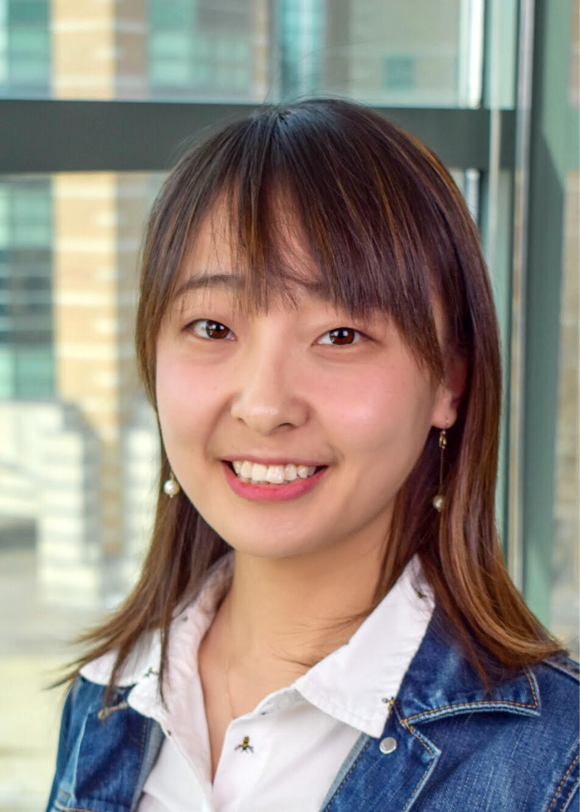

Cong (Callie) Hao
I am currently a postdoctoral researcher in the Department of Electrical and Computer Engineering (ECE) at University of Illinois at Urbana-Champaign (UIUC), under the supervision of Prof. Deming Chen.
I got my PhD (2017) degree in Electrical Engineering from Waseda University, and MS and BS degrees in Computer Science and Engineering from Shanghai Jiao Tong University.
Email: hc.onioncc@gmail.com
421 CSL, 1308 W Main St, Urbana, Illinois 61801
[My CV] Google Scholar
|
 |
Research Interests
My current research interests include high-performance reconfigurable computing, hardware-aware machine learning and acceleration, electronic design automation (EDA) tools and autonomous driving.
|
Publications
Journals
- Cheng Gong, Ye Lu, Tao Li, Cong Hao, Deming Chen, Yao Chen, "VecQ: High Accuracy DNN Model Compression with Vectorized Weight Quantization", IEEE Transactions of Computers, 2019, under review
- Zhao Yi, Cong Hao, and Takeshi Yoshimura. "Thermal and Wirelength Optimization With TSV Assignment for 3D-IC", IEEE Transactions on Electron Devices, 2019
- Ma Jiayi, Cong Hao, and Kundong Wang. "Decomposing and Cluster Refinement Design Method for Application-Specific Network-on-Chips.", Journal of Shanghai Jiao Tong University (Science), 2018
- Cong Hao, Takeshi Yoshimura. "An Efficient Multi-Level Algorithm for 3D-IC TSV Assignment", IEICE Transactions on Fundamentals of Electronics, Communications and Computer Sciences, March 2017
- Cong Hao, Nan Wang, and Takeshi Yoshimura. "A Unified Scheduling Approach for Power and Resource Optimization with Multiple V-dd or/and V-th in High Level Synthesis", IEEE Transactions on Computer-Aided Design of Integrated Circuits and Systems, January 2017.
- Cong Hao, Jianmo Ni, Nan Wang, and Takeshi Yoshimura. "Interconnection Allocation between Functional Units and Registers in High-Level Synthesis", IEEE Transactions on Very Large Scale Integration Systems, September 2016.
- Wang Nan, Wei Zhong, Cong Hao, Song Chen, Takeshi Yoshimura, and Yu Zhu. "Leakage-power-aware scheduling with dual-threshold voltage design.", IEEE Transactions on Very Large Scale Integration Systems, September 2016.
- Nan Wang, Song Chen, Cong Hao, Haoran Zhang, and Takeshi Yoshimura. "Leakage Power Aware Scheduling in High-Level Synthesis.", IEICE Transactions on Fundamentals of Electronics, Communications and Computer Sciences, 2014
Conferences
- Xiaofan Zhang, Haoming Lu, Cong Hao, Jiachen Li, Bowen Cheng, Yuhong Li, Kyle Rupnow, Jinjun Xiong, Thomas Huang, Honghui Shi, Wen-mei Hwu, Deming Chen, "SkyNet: a Hardware-Efficient Method for Object Detection and Tracking on Embedded Systems", The Conference on Machine Learning and Systems (SysML), 2020 (to appear).
- Pengfei Xu, Xiaofan Zhang, Cong Hao, Yang Zhao, Zetong Guan, Yongan Zhang, Yue Wang, Deming Chen and Yingyan Lin, "AutoDNNchip: An Automated DNN Chip Generator through Compilation, Optimization, and Exploration", Proceedings of ACM/SIGDA International Symposium on Field Programmable Gate Arrays (FPGA), 2020 (to appear).
- Cong Hao, Yao Chen, Xinheng Liu, Atif Sarwari, Daryl Sew, Ashutosh Dhar, Bryan Wu, Dongdong Fu, Jinjun Xiong, Wen-mei Hwu, Junli Gu and Deming Chen, "NAIS: Neural Architecture and Implementation Search and its Applications in Autonomous Driving", IEEE/ACM International Conference on Computer-Aided Design (ICCAD), 2019.
- Cong Hao, Xiaofan Zhang, Yuhong Li, Sitao Huang, Jinjun Xiong, Kyle Rupnow, Wen-Mei Hwu, and Deming Chen, "FPGA/DNN Co-Design: An Efficient Design Methodology for IoT Intelligence on the Edge", Proceedings of IEEE/ACM Design Automation Conference (DAC), 2019.
- Cong Hao, Atif Sarwari, Bryan Wu, Zhijie Jin, Junli Gu, and Deming Chen, "FPGA-based Secondary System for Autonomous Driving Cars", Proceedings of IEEE International Workshop on Signal Processing Systems, 2019.
- Yao Chen, Kai Zhang, Cheng Gong, Cong Hao, Xiaofan Zhang, Tao Li, and Deming Chen, "TDLA: An Open-source Deep Learning Accelerator for Ternarized DNN Models on Embedded FPGA," Proceedings of IEEE Computer Society Annual Symposium on VLSI, 2019.
- Cheng Gong, Ye Lu, Cong Hao, Xiaofan Zhang, Tao Li, Deming Chen, and Yao Chen, "μL2Q: An Ultra-Low Loss Quantization Method for DNN Compression," Proceedings of International Joint Conference on Neural Networks (IJCNN), 2019.
- Xiaofan Zhang, Cong Hao, Yuhong Li, Yao Chen, Jinjun Xiong, Wen-Mei Hwu and Deming Chen, "A Bi-Directional Co-Design Approach to Enable Deep Learning on IoT Devices," Joint Workshop on On-Device Machine Learning Compact Deep Neural Network Representations, ICML Workshop, 2019. (Best Poster Award)
- Yao Chen, Jiong He, Xiaofan Zhang, Cong Hao, and Deming Chen, "Cloud-DNN: An Open Framework for Mapping DNN Models to Cloud FPGAs", Proceedings of ACM/SIGDA International Symposium on Field Programmable Gate Arrays (FPGA), 2019.
- Cong Hao, Deming Chen, "Deep Neural Network Model and FPGA Accelerator Co-design: Opportunities and Challenges", Proceedings of IEEE International Conference on Solid-State and Integrated Circuit Technology (ICSICT), 2018.
- Sitao Huang, Mohamed El-Hadedy, Cong Hao, Qin Li, Vikram S Mailthody, Ketan Date, Jinjun Xiong, Deming Chen, Rakesh Nagi, Wen-mei Hwu, "Triangle Counting and Truss Decomposition using FPGA", IEEE High Performance extreme Computing Conference (HPEC), 2018
- Yi Zhao, Cong Hao, Takeshi Yoshimura, "TSV Assignment of Thermal and Wirelength Optimization for 3D-IC Routing", In 28th IEEE International Symposium on Power and Timing Modeling, Optimization and Simulation (PATMOS), 2018
- Cong Hao, and Takeshi Yoshimura. "Application of on-line machine learning in optimization algorithms: A case study for local search." Computer Science and Electronic Engineering (CEEC), IEEE, 2017
- Yangyizhou Wang, Cong Hao, and Takeshi Yoshimura. "A Particle Swarm Optimization and Branch and Bound Based Algorithm for Economical Smart Home Scheduling" In 20th IEEE MWSCAS, 2017
- Yuxin Qian, Cong Hao, and Takeshi Yoshimura. "3D-IC signal TSV assignment for thermal and wirelength optimization" In 27th IEEE International Symposium on Power and Timing Modeling, Optimization and Simulation (PATMOS), 2017
- Jiayi Ma, Cong Hao, Takeshi Yoshimura. "Power-efficient Partitioning and Cluster Generation Design for Application-Specific Network-on-Chip" In 13th IEEE ISOCC, 2016
- Hui Zhu, Cong Hao, Takeshi Yoshimura. "Thermal-Aware Floorplanning for NoC-Sprinting" In 59th IEEE MWSCAS, 2016
- Cong Hao, Takeshi Yoshimura. "Economical Smart Home Scheduling for Single and Multiple Users" In 59th IEEE MWSCAS, 2016
- Cong Hao, Nan Ding, Takeshi Yoshimura. "An Efficient Algorithm for 3D-IC TSV Assignment". In 14th IEEE NEWCAS, 2016 (Best Student Paper)
- Cong Hao, Takeshi Yoshimura. "EACH: An Energy-Efficient High-Level Synthesis Framework for Approximate Computing" In 2nd IEEE WAPCO, 2016
- Jian-Mo Ni, Qian Ai, Cong Hao, Takeshi Yoshimura, Nan Wang. "Primal-Dual Method based Simultaneous Functional Unit and Register Binding." In 10th ASICON, 2015
- Cong Hao, Nan Wang, Jian-Mo Ni, Takeshi Yoshimura. "An Efficient Tabu Search Methodology for Port Assignment Problem in High-Level Synthesis." In 24th IWLS, 2015
- Cong Hao, Jian-Mo Ni, Hui-Tong Wang, Takeshi Yoshimura. "Simultaneous Scheduling and Binding For Resource Usage and Interconnect Complexity Reduction in High-Level Synthesis." In 11th IEEE ASICON, 2015 (Best Student Paper)
- Cong Hao, Song Chen, Takeshi Yoshimura. "Network simplex method based Multiple Voltage Scheduling in Power-efficient High-level synthesis." In 18th IEEE ASP-DAC, 2013 (IEICE VLD Excellent Student Award)
- Cong Hao, Nan Wang, Song Chen, Takeshi Yoshimura, Min-You Wu. "Interconnection allocation between functional units and registers in High-Level Synthesis." In 10th IEEE ASICON, 2013 (Best Student Paper)
- Wang Nan, Cong Hao, Nan Liu, Haoran Zhang, Takeshi Yoshimura. "Timing and resource constrained leakage power aware scheduling in high-level synthesis." In 10th IEEE ASICON, 2013
- Cong Hao, Haoran Zhang, Song Chen, Takeshi Yoshimura, Min-You Wu. "Port assignment for multiplexer and interconnection optimization." In 5th IEEE ASQED, 2013
- Haoran Zhang, Cong Hao, Nan Wang, Song Chen, Takeshi Yoshimura. "Power and resource aware scheduling with multiple voltages." In 10th IEEE ASICON, 2013 (Best Student Paper)
- Cong Hao, Song Chen, Takeshi Yoshimura. "Port assignment for interconnect reduction in high-level synthesis." In 19th IEEE VLSI-DAT, 2012 (Best Paper Nomination)
|
|